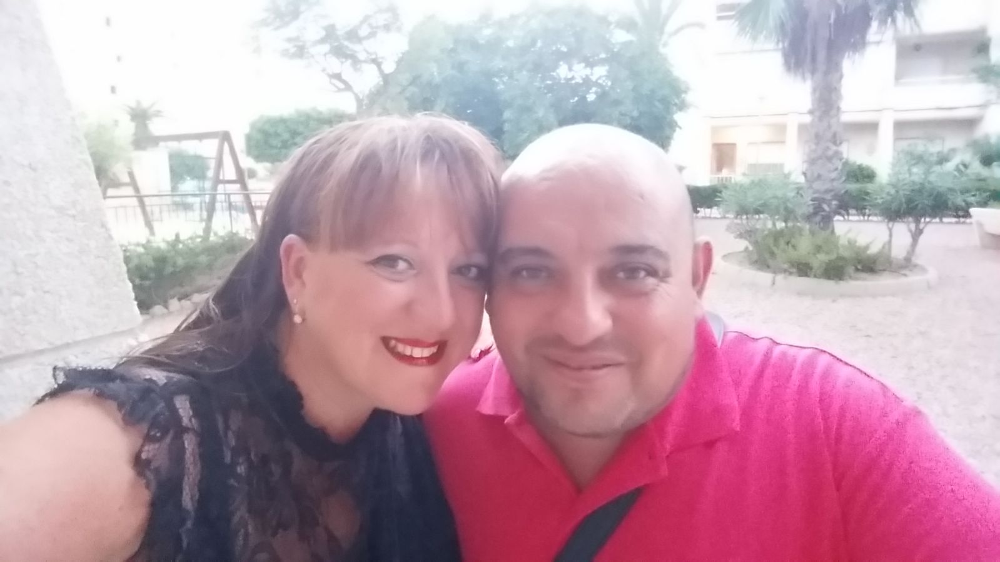

Los novios
True Love
Sonia y Manolo se conocieron en la calle Hilados, dónde Sonia era cajera en un supermercado y Manolo carnicero justo al lado y cada vez que ella le preguntaba "¿algo más?" el siempre decía "una sonrisa" y así fue cómo surgió el amor que nos lleva al día de hoy! Se dieron el SI quiero el 18 de Julio de 1998 y desde entonces han vivido llenos de amor y felicidad, con sus altibajos como todos, pero nada que ese amor tan puro que se tienen no pudiera superar. Después de un año de estar casados llegó al mundo su primer tesoro, Amanda, que les llenó el corazón de felicidad; no tardando llegó el más pequeño de la casa, Mario, otro cachito de cielo. Una familia como pocas se ven, llena de cariño, alegría, complicidad... , de esas de las que te gusta estar rodeado. Uno de los momentos que realmente nos enseñaron lo unidos que están, fue hace 4 años, cuando Sonia enfermó y Manolo y sus hijos lucharon todo lo que ella se merecía y más, para ayudarla a superarlo. Gracias a ello a dia de hoy siguen siendo la gran familia que todos conocemos.
